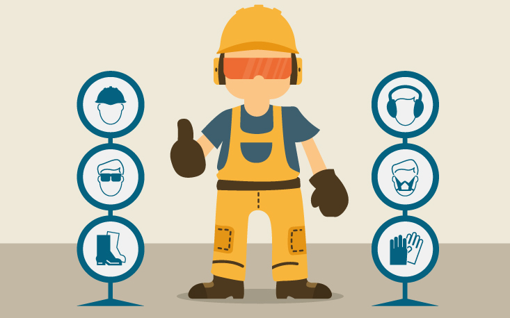

O termo qualidade de vida no trabalho ou QVT, como é, comumente, denominado em ambientes corporativos. foi na década de 70 que este conceito ganhou força, quando Louis Davis, professor da Universidade da Califórnia usou o termo qualidade de vida no trabalho (QVT) para definir o bem-estar geral, saúde e o desempenho dos colaboradores

O QSMS significa Qualidade e Sistemas Integrados (Qualidade,Segurança, Meio Ambiente e Saúde), é uma preocupação...

Qualidade
A qualidade de vida no trabalho está diretamente relacionada a um conjunto de ações que uma empresa adota para melhorar...

Segurança
Segurança do trabalho pode ser entendida como os conjuntos de medidas que são adotadas visando minimizar...

Meio Ambiente
O que é o Meio Ambiente: O meio ambiente envolve todas as coisas com vida e sem vida que existem na Terra...